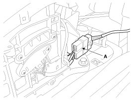
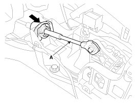
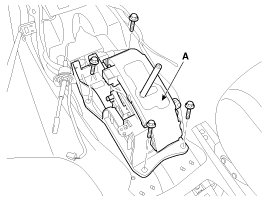
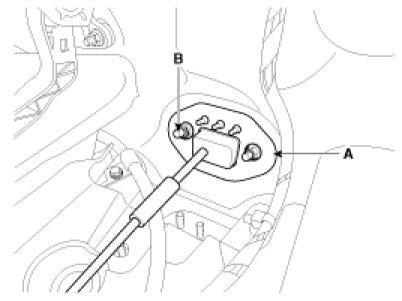
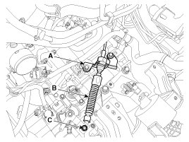
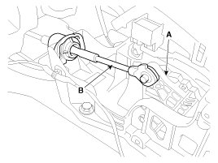
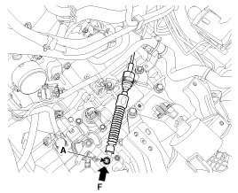

Repair Procedures
Removal
Shift Lever Assembly Replacement
1. Remove the center console assembly.
2. Disconnect sports mode connector (A).

3. Remove the control cable (A).

4. Remove the shift lever assembly (A) by removing the bolts.
Tightening torque:
8.8 - 13.7 N.m (0.9 - 1.4 kgf.m, 6.5 - 10.1 lb-ft)

5. Installation is the reverse of removal.
NOTE:
Make sure vehicle does not roll before setting room side shift lever and T/M side manual control lever to "N" position.
Control Cable Replacement
1. Remove the center console assembly.
2. Remove the control cable (A).
3. Remove the control cable assembly in the vehicle after removing the nuts (B) and the retainer (A).
Tightening torque:
11.8 - 14.7 N.m (1.2 - 1.5 kgf.m, 8.7 - 10.9 lb-ft)

4. Remove the nut (C).
Tightening torque:
9.8 - 13.7 N.m (1.0 - 1.4 kgf.m, 7.2 - 10.1 lb-ft)
5. Remove the cable (B) from the bracket (A) at transaxle assembly side .

6. Remove the control cable inside of cab.
Inspection
1. Check the damage and operation of the control cable.
2. Check the damage of the boot.
3. Check the damage and corrosion of the bushing.
4. Check the damage or weakening of the spring.
Installation
1. Installation is the reverse of removal.
NOTE:
Make sure vehicle does not roll before setting room side shift lever and T/M side manual control lever to "N" position.
Adjustment
Adjusting method for T/M control cable
1. Make sure vehicle does not roll before setting room side shift lever and T/M side manual control lever to "N" position.
2. Connect room side lever (A) and control cable (B).

3. Push cable to "F" direction shown to eliminate FREE PLAY.
4. Tighten adjusting nut (A).
Tightening torque:
9.8 - 13.7 N.m (1.0 - 1.4 kgf.m, 7.2 - 10.1 lb-ft)

5. After adjusting, check to be sure that this part operates as designed at each range of T/M side corresponding to each position of room lever.